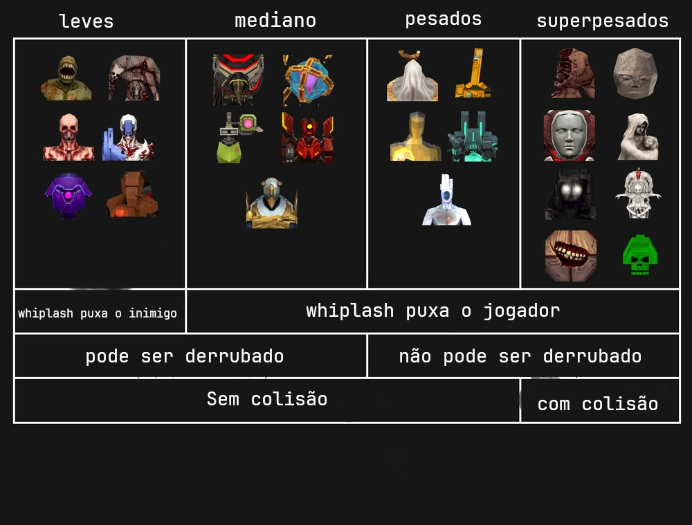

INIMIGOS
Alguns inimigos separados por peso.

INIMIGOS COMUNS
- Filth: inimigo básico que ataca de perto.
- Stray: inimigo básico que lança projéteis.
- Schism: lança varios projetéis conectados.
- Soldier: Versão superior do Stray atira 3 tiros de uma vez e tem um ataque de chute.
- Drone: inimigo voador que atira 3 projetéis e se lança no jogador antes de morrer.
INIMIGOS MENOS COMUMS
- Streetcleaner: usa lança-chamas.
- Mindflayer: voa, tem bastante vida e dispara projéteis teleguiados.
- Hideous Mass: enorme e muito resistente, lança mísseis. e tem um harpão que puxa o jogador. ponto fraco na cauda.
- Cerberus: primeiro boss do jogo que depois vira um inimigo comum. é uma estatua de pedra que pode jogar uma bomba ou pisar no chão.
- Virtue: anjo que usa raios divinos.
- Swordsmachine: segundo Boss do jogo que depois vira um inimigo comum. usa uma espada e uma shotgun.
CHEFES
- V2: uma cópia quase exata do V1 com os mesmos ataques e uma IA que se move parecida com o jogador.
- Gabriel: o Arcanjo gabriel. usa espadas e aparece 2 vezes durante o jogo.
- Cadaver do Minos O cadaver gigante do rei minos.
- Minos Prime: a alma do rei minos.
- Leviathan monstro gigante do mar em forma de serpente
Os detalhes dos inimigos mudam com as atualizações. Para dados exatos, consulte a ULTRAKILL Wiki.